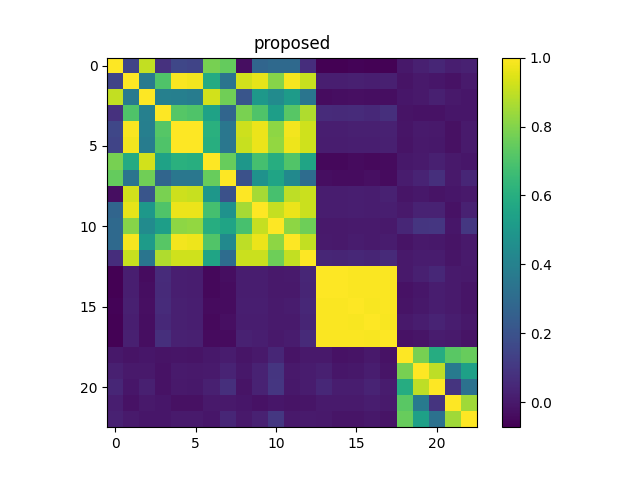

Please try this and this. Many names such as David Madigan and Noah Smith are difficult for search engines such as Semantic Scholar. This exercise provides a visualization to help resolve some of these ambiguities.

Note: Your picture will look different because you will be using different embeddings.
Please post code and output pictures on GitHub (or Colab), and share links to your code on Canvas.
Here is a colab link that includes some of the hints below: my colab.
Suggested steps:
Suggested improvements:
Hints: the following python packages may be useful:
import json,requests import numpy as np from sklearn.metrics.pairwise import cosine_similarity import matplotlib import matplotlib.pyplot as plt
See here for documentation on the Semantic Scholar API.
j = requests.get('https://api.semanticscholar.org/graph/v1/author/search?query=David Madigan&fields=name,citationCount,papers,papers.citationCount').json()
p = requests.get('https://api.semanticscholar.org/graph/v1/paper/00707ba45ffe6efa08a59693c47801211ca634d6?fields=title,embedding,citationCount,title').json()
There are many tutorials on imshow such as this.